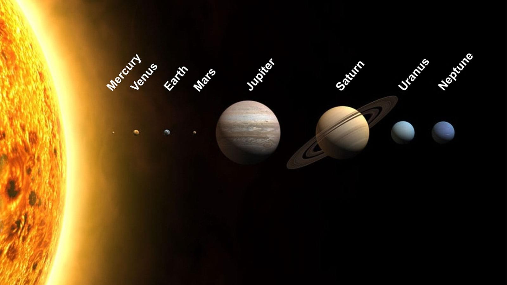

Układ Słoneczny
Układ słoneczny jest układem planetarnym składającym się z Słońca oraz ośmiu planet krążących wokół niego. Planety te to: Merkury, Wenus, Ziemia, Mars, Jowisz, Saturn, Uran i Neptun. Słońce jest gwiazdą, która emituje światło i ciepło, a także generuje pole magnetyczne. Planety w Układzie Słonecznym mają różne cechy i właściwości, takie jak rozmiar, masę, gęstość, atmosferę i liczne księżyce. Poza planetami, w Układzie Słonecznym znajdują się też planetoidy, komety, pas asteroid i Pas Kuipera z setkami tysięcy obiektów.